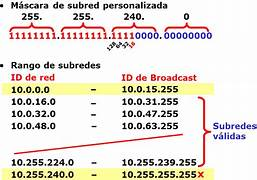
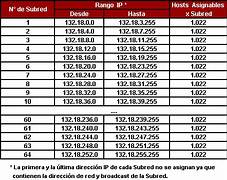

El subneteado es una técnica utilizada en redes para dividir una red principal en subredes más pequeñas. Permite una mejor organización, seguridad y uso eficiente de direcciones IP.
El subneteo se utiliza para dividir una red grande en varias redes más pequeñas, lo cual mejora el rendimiento al reducir el tráfico, aumenta la seguridad al aislar segmentos, y facilita el mantenimiento.

Supongamos que tienes una red con la dirección 192.168.1.0/24. Puedes dividirla en 4 subredes usando una máscara /26. Esto te dará cuatro bloques con 64 direcciones IP cada uno.

El subneteo es una técnica clave en redes informáticas que aporta diversos beneficios, especialmente en la administración y eficiencia de una red. Algunos de los principales beneficios incluyen: - Optimización del uso de direcciones IP: Divide grandes redes en subredes más pequeñas, evitando el desperdicio de direcciones IP y maximizando su uso. - Mayor seguridad: Limita el acceso entre subredes, lo que ayuda a proteger los datos y recursos dentro de cada segmento. - Reducción del tráfico: Minimiza el tráfico entre subredes, mejorando el rendimiento general de la red y disminuyendo la congestión. - Administración más sencilla: Facilita la identificación y resolución de problemas dentro de una subred específica, haciendo que la administración sea más manejable. - Escalabilidad: Permite a las redes crecer de manera organizada, sin comprometer la eficiencia ni la estructura.